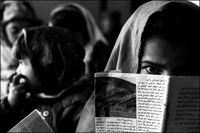

پذيرش > تریبون > از همسایه به هم نزدیک تریم / ناهید میرحاج


 از همسایه به هم نزدیک تریم / ناهید میرحاج از همسایه به هم نزدیک تریم / ناهید میرحاج
13 تیر 1391 - - نسخه قابل چاپ
تغییر برای برابری: ارتباطاتی که بین ایرانیان و افغانیان است، ما را در مقامی فراتر از دو همسایه و هم مرز قرار می دهد . حوادثی که در چند ماه اخیر در ایران در ارتباط با افغانیها اتفاق افتاده و در مطبوعات و رسانه ها منعکس شده است، ادامه یک داستان یا روایت چهل ساله است. در ضمن هشداری به همه ما هم هست که خشت از زیرپای خود درنیاوریم. هررفتاری که با این مردم داشته باشیم، آئینه ای می شود که خودمان را باید در آن ببینیم. خواندن یک کتاب سبب شد که بیشتر به زندگی این پناهندگان و مهاجرین توجه کنم. پس از مصاحبه با بعضی از این مهاجرین و پناهجویان ، تصمیم دارم در یک سلسله مقاله و مصاحبه بخشی از مشکلات و گرفتاری های زنان و کودکان افغانی و در نهایت ارتباط بین زنان و مردان ایرانی و افغانی که باهم ازدواج کرده اند، را در حد وسع و توانایی هایم منعکس کنم، با این هدف که قدمی در جهت نزدیکی بیشتر با این مردم برداشته باشم.
سالهاست ما مردم عادت کرده ایم، که افغانها را در حاشیه زندگی مان ببینیم. سریدار باغچه ویلایی، کارگر موقتی شهرداری ، کارگر ساختمانی، مقنی ، خشت زن و آجر پز کوره آجرپزی، و هر کار سخت دیگری که در کشورمان وجود دارد و به مرور و در این سالها برعهده آنها گذاشته شده است. این عادت چنان در ما ریشه دوانده است، که برای اکثر ما، افغانی معلم، استاد دانشگاه ، پزشک یا مهندس مفهوم غریب و دور از ذهنی شده است. این یک طرف قضیه است و طرف دیگر قضیه خبرهایی است که هرازگاهی در مورد این مردم در مطبوعات و رسانه ها منعکس می شود. چند افغانی به دختر نوجوان تجاوز کردند، سرقت گروهی افغانی نقابدار از یک گاوداری، ضبط صدکیلو تریاک از یک باند قاچاق افغانی. نمی دانم چرا این خبرها باید چنین در مطبوعات و رسانه ها منعکس شود، در حالیکه همین اعمال از ایرانیهای خاطی سرمی زند و چنین با آب و تاب در مطبوعات و رسانه ها نمی آید. چرا در این چهل سال گذشته که موج مهاجرت افغانیها به ایران شروع شد، یکبار و برای یک وعده کسی مقاله و گزارشی از کار شرافتمندانه این مردم برای ساختن وطن ما چیزی ننوشت. چه بخواهیم چه نخواهیم قبول کنیم، بخش بزرگی از کشورمان ایران در این چهل ساله به دست و با رنج کار همین مهاجرین افغانی ساخته شده است. کار بزرگ آنها را نمی بینیم، اما جنایات چند جنایتکار همیشه در خاطرمان می ماند. آیا همه افغانیها بزهکار هستند؟ اگر چنین است، چرا بیشتر کسانی که صاحب حرفه و کارگاه هستند، کسانی که پیمانکاری می کنند، یا در پروژه های کوچک و بزرگی که در سرتاسر این ملک در جریان است و مسئولیتی دارند، دست از نیروی کار این مهاجرین نمی شویند و کارگر افغانی را بر هموطن خود ترجیح می دهند؟ چرا در این چهل سال ما نتوانستیم قانون مدونی برای این گروه بزرگ از مهاجرین افغانی تهیه کنیم که رابطه مردم و دولت با آنها روشن و شفاف باشد؟
مانند هزاران ایرانی که نه دستی در سیاست داریم و نه دستی در قدرت، با هربار دیدن یا شنیدن اینکه زنان افغانی در ایران چه مشکلاتی دارند و کودکان افغانی از حضور در مدراس رسمی محروم هستند، یا اگر در جایی هم حضور می یابند، با دهها اما و اگر روبرو می شوند، از خودم می پرسم، این بلاتکلیفی را چه کسی پاسخگو است. کسی جواب مرا نمی دهد، مانند همیشه. همه مشکلات و ناملایمات و تبعیض ها برای این مردم کم بود، حالا منع تردد در برخی از استانهای کشور هم به آن اضافه شده است.
از برکت همین منع ها و مانع تراشی ها، دوباره این روزها کلمه افغانی ، در مطبوعات و نشریات فارسی زبان و همین طور در فضای مجازی زیاد به گوش می رسد. با خودم فکر می کنم، چهل سال یعنی برابر با زندگی یک نسل این مردم در کنار ما بودند، اما اکثریت ما ایرانیها چندان چیز زیادی از آنها و فرهنگشان نمی دانیم، جز چند کلمه از لهجه و زبانشان و اسمهایی که گاه برای ما عجیب و غریب به نظر می رسد. سالهاست گفتگوی ما با اینها از این چند عبارت های کلیشه ای عبور نکرده است.
 افغانی هستی ؟ افغانی هستی ؟
ها بله؟
کجای افغانستان؟
ولایت غزنی! دهات اطراف غزنی! می دانی غزنی کجا قرار دارد؟
نه!
این غزنی می تواند قندهار، کابل ، یا مزار شریف باشد. و بعد همه چیز تمام می شود. او کار می کند و بین ما دیواری از بی اعتمادی یا تحقیر وجود دارد. درست مانند فرهنگ برده داری امریکاییها که هم به نیروی کار برده ها احتیاج داشتند و هم تحقیر و مجازات آنها برقرار بود. وضعیت بی ثبات این مهاجرین با یک کلیشه در ذهن ما چنان حک شده است، که افغانها را فقط در قالب نیروی کار ساده می بینیم. بسیار وقتها شده است، که در بین این مهاجرین افغانیهای متخصص شامل دکتر ، مهندس، نویسنده، شاعر، پرستار و معلم یا استاد دانشگاه وجود دارد، و وقتی که آنها تخصص خود را به زبان می آورند، ناباور نگاهشان می کنیم، که گویا این ملت نمی توانند چنین نیروهای متخصصی داشته باشد. و متاسفانه باید گفت، این وضعیت و نگاه از بالا چنان در ما رسوخ کرده است، که اعتماد بنفس را از طرف مقابل گرفته و کمتر صدایی از این گروهها یا متخصص ها در جامعه ما شنیده می شود.
در این حال و احوال، به طور تصادفی در کتابفروشی چشمم به کتابی می افتد با عنوان« احمدشاه مسعود به روایت صدیقه مسعود». آن را می خرم. با این قصد که در فرصتی مناسب آن را بخوانم. اما غروب که به خانه می رسم، پیش از اینکه لباس عوض کنم و ، پشت میز می نشینم. قهوه درست می کنم. تا قهوه آماده شود، تصمیم می گیرم خواندنش را به فرصت مناسب حواله ندهم و همان موقع ورقی بزنم. حالا نیمه شب شده است و تازه کتاب را تمام می کنم. در خلال خواندن کتاب بارها از خود سوال می کنم« چرا ما با کسانی که چنین هم پیوندی داریم، چنان می کنیم، که گاهی انسان از گفتنش شرم می کند. در پایان کتاب متوجه می شوم که صدیقه مسعود و فرزندان شیر پنج شیر یعنی احمد شاه مسعود در ایران زندگی و تحصیل می کنند. البته این اطلاعات مربوط به اواسط دهه 1380 است. زمان حاضر را نمی دانم. اگر این روزها که در بعضی استانهای ایران این رسم پیدا شده است که افغانها را از ورود به مرکز شهرها یا مکانهای گردشگری منع کرده اند به گوش آنها هم برسد چه عکس العملی نشان می دهند؟ برای این سوالها جوابی ندارم.
چندین دهه است که ما میزبان این مردم هستیم که از رنج جنگ و تجاوز ابرقدرتها و جنگهای ویرانگر خانگی و حتی برای کار و درآوردن پول معیشت به کشورمان مهاجرت می کنند، اما هنوز نتوانسته ایم رابطه مان را با آنها تعریف کنیم. تک تک صفحات این کتاب به من کمک می کند، تا پشت چهره این مردم را که گاهی در کوچه و خیابان و گاهی هم نزدیکتر در خانه و مزرعه دیده ام، بهتر بشناسم. در طول خواندن این کتاب بارها از خودم سوال می کنم که بالاخره آنها پناهنده هستند، یا مشتی بزهکار و خلافکار؟ آیا آنها فقط نیروی کار ساده هستند یا می توانند مانند هر انسانی به بالاترین تخصص ها هم برسند؟

چند روزی از این ماجرا گذشته است. این موضوع هنوزدر ذهنم تازه است. در همین زمان که فکرم به موضوع افغانیها مشغول است ، بی بی سی فارسی در برنامه پرگار چند ایرانی و افغانی را دور هم جمع کرده است که در مورد برخورد ایرانیها با افغانیها صحبت کنند. دختری افغانی که ظاهراً دانشجو است در بین آنها است. دل پری از برخوردهایی دارد که در ایران با او شده است. با اینکه در ایران بزرگ شده است، می گوید، هیچ وقت دلم برای تهران یا شهرهایی که در ایران دیده ام تنگ نمی شود، مانند دلتنگی برای وطنم یا شهرهایی مثل کابل. انگار کسی نیشتر برداشته و به من می زند. او با زبانی که هنوز تلخ است از خاطراتش در ایران می گوید و از رنجها و زخم زبانهایی که از هموطنانم برده یا شنیده است. بیش از هرچیزی احساس می کنم که صرفنظر از بی قانونی ها و بی تکلیفی ها که هر مهاجر افغان با آن دست به گریبان است، در صحنه جامعه و مردم، او از نگاه از بالای ما رنجیده خاطر است. نگاهی که در آن تبعیض موج می زند. فکر می کنم که ریشه این مشکلات در کجاست؟
برای من به عنوان فعال حقوق زنان و کودکان، زنان و کودکان افغان در ایران موضوع مهم تری هستند. چون به عنوان یک امر مسلم آنها از مردان بزرگسال آسیب پذیرترند. وقتی که کتاب را می خوانم جدای از شرح خلقیات احمد شاه مسعود که صدیقه مسعود در مورد همسرش نوشته است، با زیبایی های یک سرزمین و سنتهای آن آشنا می شویم. در جایی ازکتاب صدیقه از قول و زاویه دید همسرش می گوید: «مسعود در جریان همه چیز بود. حتی در جریان امور زنانی که در زمان زایمان یا بعد از سقط جنین فوت می کردند هم قرار داشت. او می گفت: مرگ این زنان ، مرگ مادران آینده ی کشور ما است! از نظر او کمک به کشورمان از کمک به زنان آغاز می شد. او می گفت« آن ها آینده افغانستان هستند.» [1]
برای من که چندان با دیدگاههای احمد شاه مسعود آشنا نبوده ام، این حرفها جالب است. نوع نگاه او امری است که در جامعه ما هم به رسمیت شناخته نمی شود، چه رسد به افغانستان که چند پله از جنبه ترقی و توسعه اقتصادی و اجتماعی از ایران عقب تر است. این تنها مطالبی نیست که در کتاب با آن برمی خورم. احساس اینکه در مناطقی مانند پنجشیر که محاط در کوههای سربه فلک کشیده است، زنان و مردانی مانند احمد شاه مسعود پیدا می شوند که با شاهنامه و دیوان حافظ یا کلیات سعدی سر می کنند، نشان دهنده این است که وابستگی فرهنگی ما بسیار عمیق است.
به نقل از مقاله ای که درباره افعانستان در ویکی پدیا آمده است میخوانم: «با اطمینان و جرأت میتوان گفت که تاریخ کامل کشور افغانستان را نمی توان از ذیل نام افغان و افغانستان دریافت؛ بلکه تاریخ باستانی و قرون میانه این مملکت را در تواریخ ایران اوستایی و شاهنامه ای و در تاریخ خراسان باید جستجو نمود و بدون تردید تاریخ ایران اوستایی و شاهنامه ای و خراسان تاریخی از سرزمین بلخ و بامیان و سیستان و نیمروز و زابل وكابل و هرات و مرو و غور و غرجستان و از کتاب اَوِستای زردشت و شاهنامه ها و از تاریخ پیشدادیان و کَیانیان و ادبیات دری، جدا نیست .» [2]
اگر در این گذشته اشتراک نظر داشته باشیم، آنگاه به قول تحلیلگر و مورخ ارمنی: «هویت سیاسی افغانستان امروز به نیمه قرن هیجدهم برمی گردد.» [3] و این البته فقط هویت سیاسی است و هویت تاریخی و فرهنگی مرزهای کنونی افغانستان به همان قدمت هویت تاریخی و فرهنگی ایران است. با توجه به این واقعیتها چرا ما گذشته¬ تاریخی و فرهنگی خود را فراموش کرده ایم و توجه نمی کنیم که اگر این ارتباطات فرهنگی را از ما بگیرند، جایگزین آن چیزهایی خواهد شد که اهل نظر درباره آن هشدار داده اند. به گفته یکی از همین اهل نظر، یعنی علی میرفطروس: «ببینید! ما (ایرانیها، افغانها، تاجیکها و ...) دارای یک زبان و یک گذشتۀ مشترک تاریخی و فرهنگی هستیم. این زبان و گذشتۀ مشترک تاریخی و فرهنگی مانند رود زلالی است که هر کس میتواند به قدر توان و بضاعت خویش از آن، آب بردارد و سیراب شود و بقول "بیدل": "رنگ آب از سیلی امواج میگردد کبود»"
از طرف دیگر، من فکر میکنم که باید بین "مرزهای سیاسی" و "مرزهای فرهنگی" تفاوت قائل شویم. مرزهای سیاسی در طول زمان و از طریق جنگها یا حملات و هجومها، جا به جا شده و میشوند و یا اساساً تازه "ایجاد" میشوند، امّا مرزهای فرهنگی، مسئلهای است تاریخی و درازمدت که با جغرافیای جان و روح و هستی معنوی ملّتها بوجود میآیند و حتّی در کشاکش جنگها و هجومهای سیاسی - نظامی پایدار میمانند.
از این دیدگاه، من فکر میکنم که ما (ایرانیها، افغانها، تاجیکها و ...) در یک میهن مشترک فرهنگی زندگی میکنیم و وظیفۀ ما است که به دور از سوداها و وسوسههای "سیاست بازان"، با همدلی و همزبانی، از این میهن مشترک فرهنگی، پاسداری کنیم. از همین رو است که معتقدم: "همدلی (و) همزبانی بهتر است "
[4]
با همه این پیوندهای عمیق آنگاه جای این سوال باقی است که این کژرفتاریها با کسانی که چنین از نظر فرهنگی و تمدنی به ما نزدیک هستند، برای چیست؟آیا این کژرفتاریها آینده منافع مشترک ما را به خطر نمی اندازد؟ وقتی که ما اجازه نمی دهیم کودکان افغان در مدارس رسمی درس بخوانند، آنها را از چه چیزی محروم می کنیم، به طور بدیهی آنها را از حق تحصیل محروم کرده ایم. اما به نظرم بیش از هرچیزی، خودمان را از یک هم پیوندی عمیق بین کودکان ایرانی و افغانی محروم کرده ایم. شاید زمانی دیگر این کودکان به عنوان تصمیم گیران یا حاملان فرهنگی ایران در افعانستان تاثیر گذار باشند. در واقع ما با محروم کردن این کودکان از تحصیل،به نوعی مانع پیوند فرهنگی و اجتماعیِ دو کشور با یکدیگر شده¬ایم. یا اینکه وقتی که مردی افغانی با زنی ایرانی ازدواج می کند، چرا فرزند آنها را شناسنامه نمی دهیم؟ چرا این ازدواج را به رسمیت نمی شناسیم؟ مگر آن پسر افغانی یا دختر ایرانی یا برعکس آن چه گناهی مرتکب شده اند که بچه های آنها از حق زیست اجتماعی محروم می شوند؟
وضعیت امروز و گذشته ما با افغانها فراتر از رابطه و پیوند بین دو ملت است. در حقیقت اگر گفته می شود ما از همسایه به هم نزدیکتریم، یعنی اینکه چنان اشتراکات فرهنگی و تمدنی داریم که نمی توانیم رابطه را تنها با کلمه همسایه تعریف کنیم. اما رفتار برخی از ما ایرانیها چنان است که گویی این مردم و این ملت بیگانگانی ناشناخته برای ما هستند. چرا دچار این وضعیت مصیبت بار شده ایم؟
وقتی که بحث افغانیها در ایران می شود، همیشه دوگروه درمقابل هم موضع می گیرند. مردم کوچه و بازار و صاحبان حرفه و کارگاهها که از نیروی کار افغانها بهره می برند. مردم کوچه و بازار بخصوص طبقات پایین اجتماع به افغانها به عنوان نیروی رقیب نگاه می کنند که بازار کار ایران را متلاطم می کنند. از طرف دیگر صاحبان کار و سرمایه به افغانها به عنوان نیروی بدیلی در برابر نیروی کار ایرانی نگاه می کنند که کمتر حقوق می گیرند و در بسیاری از موارد به گفته خود همین صاحبان کار ، بهتر از کارگر ایرانی کار می کنند. در این بین آن چیزی که اصلاً دیده نمی شود، زنان و کودکانی هستند که در پشت سر این مردانی که اساس دعوا شده اند، پنهان اند. زنان و کودکانی که صاحبان حرفه و کارگاه ها به سرنوشت آنها علاقه ای نشان نمی دهند و ترجیح می دهند که آنها را نبینند. اگر در کارگاه شان به آنها اتاقکی یا آلونکی داده اند، هیچ مسئولیتی در قبال بهداشت و آموزش این زنان و کودکان قبول نمی کنند. در حقیقت این زنان و کودکان در بدترین وضعیت غذایی، بهداشتی و آموزشی روزگار خود را می گذرانند.
وضعیت دولت در این بین نیز نامشخص است. دولت ایران حداقل در دوره پس از انقلاب به افغانها هم نگاه از زاویه اخوت اسلامی داشته است و هم به نیروی کار افغانها با دیده اغماض نگاه کرده است. در دوره جنگ ایران و عراق از برادران افغانی که به جبهه می رفتند خیلی استقبال می شد. و چه بسیار از این جوانها که خونشان را با هدف پیروزی قوای اسلام بر کفر صدامی هدیه این سرزمین کردند. چنین نزدیکیها و تناقضاتی فقط در جامعه ما پیدا می شود. از یکسو با آنها خواهر و برادر دینی هستیم و از سوی دیگر آنها را از نظر شخصیتی له و لورده می کنیم. جالب است که باز جنبه ای از این تناقضات را در بخشنامه های دولتی شداد و غلاظ می بینیم. امروز فلان فرمانداری از افغانیها می خواهد ایران را ترک کنند و در همین بخشنامه کسانی را که این نیروها را بکار بگیرند تهدید می کنند. اما در دنیای واقع خود تصمیم گیران دولتی و شهرداریها به خوبی واقف هستند که در بسیاری از موارد دیگر نمی توانند روی نیروی کار ایرانی حساب کنند و کارهای بسیار سخت مانند کندن معابر برای لوله کشی ها، یا خدمات و نظافت و کارهایی را که نیروهای کار ایرانی از آن پرهیز می کنند، به افغانها سپرده می شود. شاید این حرف دور از حقیقت نباشد که فلان مدیر کل وزارتی که با این نیروها سرکار دارد و خودش بخشنامه اخراج آنها را صادر می کند، در باغچه و خانه ویلایی یا حتی در کارهای دیگر از این نیروها استفاده می کند و به روی مبارک خودش نمی آورد که آخر با این مردم مهاجر که از هر گروه و حرفه و از هر منش و گروه سنی و جمعیتی در میان شان وجود دارد، فقط نمی شود با عنوان کلی مهاجر افغانی یا نیروی کار ساده حرف زد و دستور صادر کرد و تازه خود صادرکنندگان این بخشنامه ها و دستورها هم به آنچه می گویند عمل نکنند چه رسد به مردمی که در دستگاه های دولتی مسئولیتی ندارند.
اگر قرار باشد از منظر سیاست به موضوع افغانی ها نگاه کرد، سیاست برای این سوالها، جوابی ندارد. متاسفانه اما امروزه همه چیز و همه روابط بین همسایگان و در حیطه منطقه ای و بین المللی تنها از منظر سیاسی دیده می شود. درحالیکه موضوع مهاجران افغانی بخصوص زنان و کودکان آنها باید از منظر انسانی دیده شود. این منظر شاید مورد قبول بسیار کسانی که خود را تابع واقعیتها می دانند، نباشد و شاید هم به صلاحشان نباشد که به آن توجه کنند یا معترف شوند. اما به اعتقاد کسانی مانند من نگاه انسانی به موضوع مهاجران افغانی می تواند منافع درازمدت اقتصادی ، اجتماعی و امنیتی برای دو طرف یعنی ایران و افغانستان داشته باشد.
به همین علت است که تصمیم گرفتم فراتر از مقالاتی که مخاطبان آن ایرانیها از هر گروه و جماعتی که هستند، سعی کنم با بعضی از این مردم از هر گروه و حرفه، با هر تمایل و نظری که دارند و سالهاست در ایران زندگی می کنند، مصاحبه کنم و تا آنجا که ممکن است، صدای آنها، را ، آرزوها و رنجشهای شان را منعکس کنم، شاید این گفتگوها سبب شود اندکی هم که شده کلیشه های ساده ای که از افغانیها ساخته ایم و آلوده به تبعیض و نگاه از بالا است، حداقل در بین گروه های اجتماعی ایرانی که وابستگی هم به دولت ندارند، عوض شود. تجربه ثابت کرده است، با تغییر در نگاه این گروه ها می تواند راه رسیدن به منافع مشترک فرهنگی و اجتماعی بین دو ملت را هموارتر کرد.
ادامه مطالب
مصاحبه با خدایار و زنش ( کارگر افغانی با همسر ایرانی)
مصاحبه با سه کودک افغانی ( سه دختر )
مصاحبه با یک دختر جوان دانشجو
ارسال به
بالاترین
،
توییتر
،
فریندفید
،
فیسبوک
يادداشت
[1] هاشمی، شکیبا و کولومبانی، ماری فرانسواز، احمد شاه مسعود به روایت صدیقه مسعود، ترجمه افسر افشاری، نشر مرکز، تهران، 1388، ص 241
[3] گریگوریان ، وارتان ، ظهور افغانستان نوین، ترجمه علی عالمی کرمانی، ناشر عرفان( شریعتی افغانستانی)، تهران 1388، ص 25
در همين بخش :
 دهمین دورۀ مراسم تندیس صدیقه دولت آبادی ۱۳۹۲ دهمین دورۀ مراسم تندیس صدیقه دولت آبادی ۱۳۹۲
کارت پستالهایی به بهانهی هشت مارس و به یاد همهی مبارزین راه برابری
بیانیه بیش از 350 تن از مدافعان حقوق زنان به مناسبت روز جهانی زن؛ زنان هر روز فرودستتر میشوند
لباسی که برای تن ما دوخته اند! /اعظم بهرامی
چالشها و چشمانداز فعالیت مدنی زنان
ديگر بخش ها :
طرح یک میلیون امضا
|
مقالات
|
سایت نوشته ها
|
اخبار
|
گزارش كمپين
|
گفت و گو
|
علیه سکوت
|
كوچه به كوچه
|
نامه های شما
|
گزارش ویژه
|
گفتگو با اعضا
|
ویژه سالگرد کمپین
|
تصویر برابری
|
دل آرام علی
|
تریبون
|
مقالات
|
تاریخ شفاهی
|
خارج از چارچوب
|
کتابخانه
|
درباره کمپین
|
کمپین در شهرها
|
کمپین در بند
|
صدای تغییر
|
ویژه 22 خرداد
|
لایحه حمایت از خانواده
|
گالری
|
عشا مومنی
|
امیر یعقوبعلی
|
خدیجه مقدم
|
راحله عسگری زاده و نسیم خسروی
|
پروین اردلان،جلوه جواهری، مریم حسین خواه، ناهید کشاورز
|
زینب پیغمبرزاده
|
سعیده امین، سارا ایمانیان، محبوبه حسین زاده، ناهید کشاورز و همایون نامی
|
احترام شادفر
|
نسیم سرابندی زاده،فاطمه دهدشتی
|
وبلاگ مهمان
|
پرونده خرم آباد
|
دستگیری ها
|
مریم مالک
|
پرستو اللهیاری
|
مهرنوش اعتمادی
|
سمیه رشیدی
|
Other Languages
|
همراهان
|
«فراخوان کمپین ده روز با بهاره هدایت»
| English
|